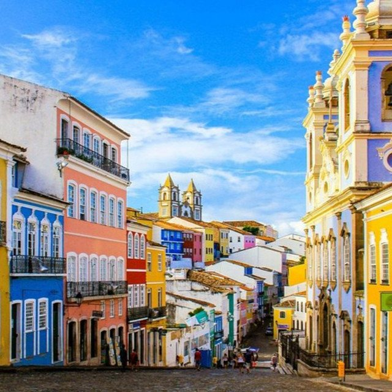
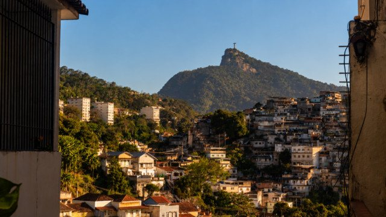

The Eclectic Polymath Podcast · Archive
#154 Salvador: Black Brazil, Colonial Power, and the Fractured City

About this episode
Few cities reveal Brazil’s history as visibly as Salvador. Its geography almost seems to tell the story itself: an Upper City built around government, religion, and colonial authority towering above a Lower City historically tied to ports, commerce, and enslaved labor. But underneath that physical division lies one of the richest centers of African civilization in the Americas.
This episode traces Salvador da Bahia from its rise as colonial Brazil’s first capital and a center of the Atlantic slave economy through its decline in political importance and emergence as a powerhouse of Afro-Brazilian culture. We explore Candomblé, capoeira, Black resistance, labor movements, music, religion, and the extraordinary ways African traditions survived, adapted, and transformed the city.
Key points
- Its geography almost seems to tell the story itself: an Upper City built around government, religion, and colonial authority towering above a Lower City historically tied to ports, commerce, and enslaved labor.
- This episode traces Salvador da Bahia from its rise as colonial Brazil’s first capital and a center of the Atlantic slave economy through its decline in political importance and emergence as a powerhouse of Afro-Brazilian culture.
- But Salvador also contains a profound contradiction.
- The Black culture that gives the city much of its global identity exists alongside deep racial inequality, segregation, police violence, and uneven urban investment.
- Salvador becomes a way to understand something much larger about Brazil: how a society can celebrate Black culture while the people who created it continue fighting for an equal share of the city around them.
More like this
 #197 Spirit Halloween: The Business of the Pop-UpOctober 8, 202648:16
#197 Spirit Halloween: The Business of the Pop-UpOctober 8, 202648:16 #170 Hong Kong Under Japan: The Three Years and Eight Months That Changed the CitySeptember 21, 202659:25
#170 Hong Kong Under Japan: The Three Years and Eight Months That Changed the CitySeptember 21, 202659:25
#150 The Eclectic Polymath Goes To Brazil! 🇧🇷September 11, 202624:06#151 The Epic History of BrazilSeptember 11, 20261:02:27